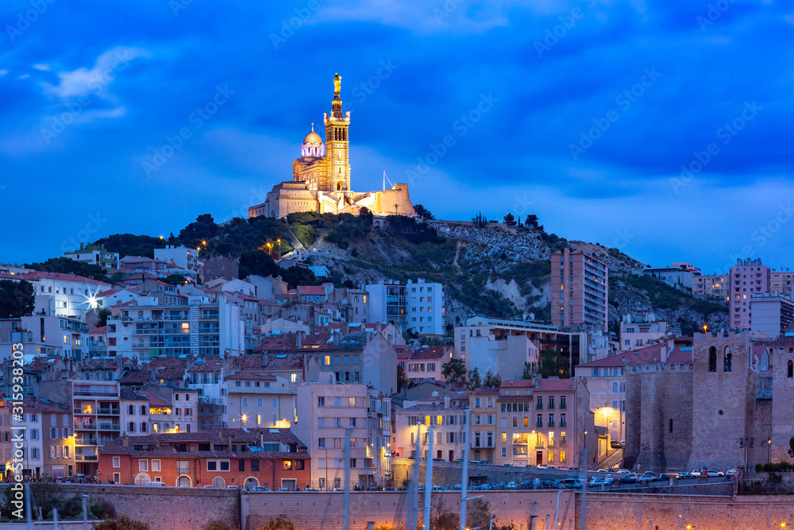
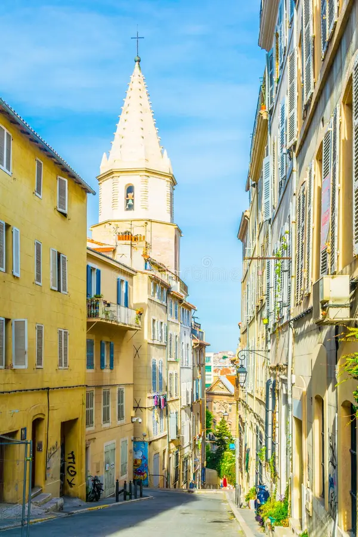
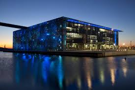
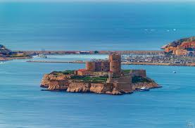

Vieux-Port (Old Port) – The Heart of Marseille
- The historic harbor, used since 600 BC by the ancient Greeks.
- Filled with colorful boats, seafood restaurants, and lively markets.
- Fish Market: Fresh catches are sold daily in the morning.
- Fort Saint-Jean & Fort Saint-Nicolas: Two old forts guarding the port.
- Sunset views: Best seen from a waterfront café or a boat.
- Best for: Strolling, seafood dining, and boat tours.

Basilique Notre-Dame de la Garde – The Best Viewpoint

- A stunning Catholic basilica perched on a hill, overlooking the city.
- Offers 360° panoramic views of Marseille and the Mediterranean.
- Features golden Virgin Mary statue, protecting sailors and the city.
- How to get there:
- Hike up (30–40 minutes).
- Take bus #60 or a tourist train from the Old Port.
- Best for: Amazing views, history, and photography.
Le Panier – The Oldest Neighborhood

- A charming, artsy district with narrow streets, colorful houses, and street art.
- Once home to sailors and traders, now full of boutiques, cafés, and galleries.
- Key places to visit:
- La Vieille Charité: A former almshouse turned into a museum & cultural center.
- Place des Moulins: A quiet square with historic windmills.
- Best for: Exploring hidden gems and experiencing Marseille's authentic vibe.
MuCEM – Museum of European and Mediterranean Civilizations

- A modern museum that showcases Mediterranean history and culture.
- Connected to Fort Saint-Jean by a futuristic bridge.
- Features exhibitions on art, history, and migration, plus a rooftop café with views.
- Best for: Culture and architecture lovers.
Calanques National Park – Marseille's Natural Wonder
- A breathtaking coastal park with dramatic limestone cliffs and turquoise waters.
- Offers hiking, kayaking, rock climbing, and boat tours.
- Famous Calanques to Visit:
- Calanque de Sugiton: Stunning views and a great hike.
- Calanque d'En-Vau: A hidden paradise with crystal-clear water.
- How to get there:
- Boat tour from Marseille.
- Bus & hike from Luminy or Cassis.
- Best for: Outdoor adventure and nature lovers.
Château d'If – The Real-Life "Count of Monte Cristo" Prison

- A historic fortress-prison on a small island, famous from the novel The Count of Monte Cristo.
- Once used to hold political prisoners, now open for tours.
- How to get there: 20-minute ferry from the Old Port.
- Best for: History lovers and literature fans.
Prado Beaches & Corniche Kennedy – Marseille's Seaside Escape
- Plage du Prado: The largest sandy beach, great for swimming and sunbathing.
- Corniche Kennedy: A scenic coastal road with stunning sea views.
- Vallon des Auffes: A charming little fishing port with seafood restaurants.
- Best for: Relaxing by the sea and enjoying the Mediterranean vibe.
Marseille's Food & Local Specialties
- Bouillabaisse: Marseille's famous seafood stew, made with fresh fish and saffron broth.
- Panisse: Chickpea flour fries, perfect for snacking.
- Navettes de Marseille: Orange-flavored boat-shaped biscuits.
- Pastis: A local anise-flavored drink, often served as an apéritif.
- Best places to eat:
- Le Petit Nice: Michelin-starred restaurant for seafood.
- Chez Fonfon: Traditional bouillabaisse.
Best Time to Visit Marseille
- Spring (April–June): Perfect weather for sightseeing and hiking in the Calanques.
- Summer (July–August): Best for beaches, but can be crowded.
- Autumn (September–October): Fewer tourists, great for food and culture.
- Winter (November–March): Mild weather, good for exploring without crowds.